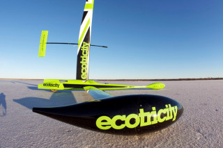

Wind power, with its green credentials, is a primary force in our attempt to reduce our reliance on fossils fuels in order to reduce global warming. The majority of effort to exploit wind power is focused on converting its energy into electricity. However, if you are willing to live on the edge you'll find examples of wind energy used directly to power land-based vehicles, and very quickly in Greenbird's case - a world land yacht speed record contender.
GreenbirdImage courtesy of Greenbird


 Get our Blog feed
Get our Blog feed